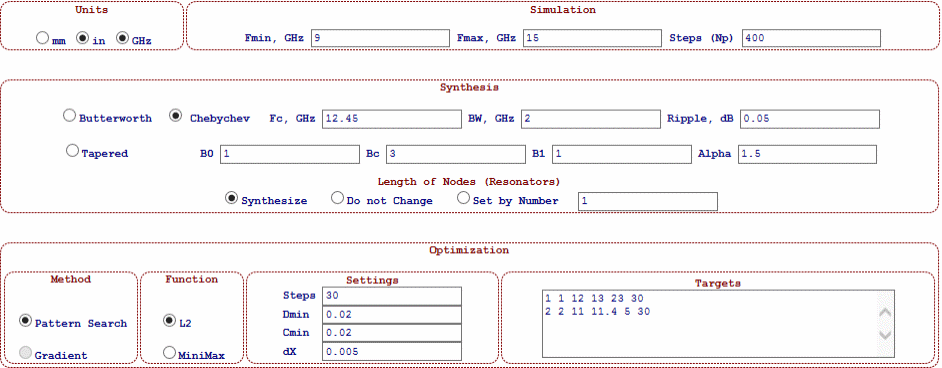
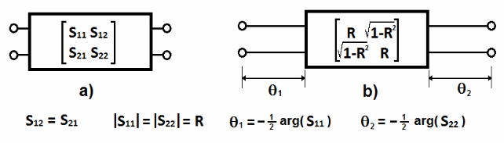
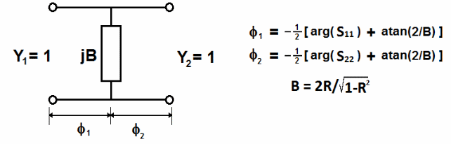
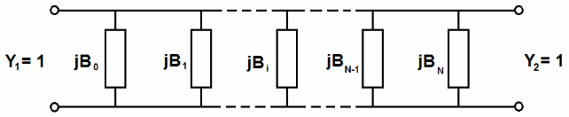

The Setup Page (setup.htm) contains controls and forms (see Figure ) with general project setting such as:
Units of measure
Simulation: frequency sweep
Synthesis options and parameters
Optimization parameters
Optimization Method
Optimization Function
Optimization Settings
Optimization Targets

All geometric dimensions and parameters are measured either in millimetres (mm) or inches (in). All parameters and quantities having a frequency dimension are measured in gigahertz (GHz).
The frequency sweep of simulation is linear and it is defined by the starting frequency point (Fmin), ending frequency point (Fmax) and number of all frequency points (Np) of analysis reduced by one. For example, if we perform simulation from 10 GHz to 15 GHz with 10 MHz step, we should enter Fmin=10, Fmax=15 and Np=500 (not 501), Thus,
Np=(Fmax - Fmin) /dF ,
where dF is frequency descreet.
WR-Connect offers several synthesis methods based on representation of the waveguide structure as a surrogate distributed network (see Figure 2).

For synthesis purpose, each waveguide junction (iris, step, cavity) with zero-length interface and with given complex s-parameters (Figure 2a) is represented as a lumped element with real values of reflection and transmission coefficients (Figure 2b) and with interface having certain electrical length (given by expressions in Figure 2). Such a distributed network element is further represented as an equivalent shunt susceptance (Figure 3) with corresponding electrical phase.

All synthesis methods used in WR-Connect are applied to waveguide component represented as a sequence of such connections (see Figure 4)

Figure 4: Distributed network representation of a filter or transformer
WR-Connect offers three filter synthesis methods based on representation of the waveguide structure as a surrogate distributed network:
Butterworth or Maximally Flat
Chebyshev
Tapered
Each of those synthesis methods is set by appropriate radio button with corresponding synthesis options and keys listed in the table below.
Table 1: List of filter synthesis parameters and keys
|
Parameter or Key |
Synthesis |
Description |
|
Fc |
Butterworth, Chebyshev, Tapered |
Central or characteristic frequency in GHz. This parameter is also used in other simulations. It must be specified if even it is not used. |
|
BW |
Butterworth, Chebyshev |
Characteristic filter bandwidth in GHz. It is an optional parameter used only in Butterworth/Chebyshev filter synthesis. |
|
Ripple |
Chebyshev |
Insertion loss ripple in dB. An optional parameter used in Chebyshev filter synthesis only. |
|
B0 |
Tapered |
Starting relative susceptance in the distributed filter network (Figure 4) |
|
Bc |
Tapered |
Middle relative susceptance in the distributed filter network (Figure 4) |
|
B1 |
Tapered |
Ending relative susceptance in the distributed filter network (Figure 4) |
|
Alpha |
Tapered |
Taper profile parameter. Used in tapered filter synthesis. |
|
Synthesize |
Butterworth, Chebyshev, Tapered |
If turned on, the length of waveguide sections between the junctions is automatically set in accordance with prototype network. |
|
Do not Change |
Butterworth, Chebyshev, Tapered |
If turned on, the length of waveguide sections between the junctions remains same. |
|
Resonant Order |
Butterworth, Chebyshev, Tapered |
It is associated with electrical length of distributed lines measured in half-wavelengths. In case of conventional direct coupled is related to the last index of the resonant mode in conventional iris/stub filters. For example, it is set to 0 (zero) in case of TE101 resonance. |
Only Pattern Search optimization engine is currently available.
The optimization is perform as an iteration algorithms, which minimizes a cost function representing a deviation of simulated performance from the targets (specs). There are two types of optimization functions are available. The L2 evaluates the root mean square of the selected s-parameter magnitude simulated over the specified frequency ranges relative to the specified targets. The MiniMax minimizes the maximum value of the selected s-parameter of simulation (the worst case) found within the specified frequency ranges relative to the corresponding spec target. In the both cases the optimizer has a goal to achieve a performance, which is better (not equal) than the specs. For example, if we design a filter with 23 dB return loss and 50 dB near-band rejection, the optimizer would tend to achieve more dBs (say 35 dB return loss and 70 dB rejection if achievable). In case of preventing “over-optimization”, a user can interrupt the optimization during the process or initially set lesser number of iterations.
|
Parameter |
Meaning |
|
Steps |
The number of iterations. This number of steps will be performed. |
|
Dmin |
A reserved parameter. It is currently not utilized. |
|
Cmin |
A reserved parameter. It is currently not utilized. |
|
dX |
A relative deviation of a structure dimension during optimization. In other words, each dimension selected for optimization will variate proportionally (increase or reduces) for about dX*100%. |
Targets
The targets (the specs) are set as separate text lines in the window. Each spec has 6 numbers, which are the first s-parameter path index, the second s-parameter path index, specified frequency range starting frequency in GHz, specified frequency range ending frequency in GHz, targetted s-parameter magnitude (absolute value) in dB and the number of frequency points in the specified range. For example, the following text line below
|
1 |
1 |
7.67 |
7.89 |
30 |
25 |
sets the optimization of the absolute magnitude of S11 (|dB(S11)|) over the frequency range from 7.67 GHz to 7.89 GHz to be more than 30 dB when simulated as a linear sweep of 30 frequency points. All specs must have 6 parameters including two frequency points, if even optimization performs on a single frequency point as shown below.
|
2 |
1 |
7.45 |
7.45 |
60 |
1 |
Here optimization is set as S21 (|dB(S21)|) positive magnitude obtained at a single frequency point of 7.45 GHz and targetted to be greater than 60 dB. Up to several specs can be specified in the widow, though in many cases only one is enough. It should be also noted, that the same settings are used for aggressive space mapping (ASM) optimization also.